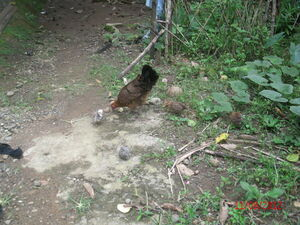

ahak 
/ʔahak/
vt.
for a person or animal (eg-ahak, mig-ahak/in-ahak, agent, eg><an-) to assist someone or something walking ahead (eg-ahaken, in-ahak/mig-ahak/pig-ahak, ahaken, patient, eg><en-) for a reason (ig-ahak, in-ahak, reason, ig><ø-)
Ka eg-inahak iyan ka egsinundul te eggun-a eggipanew ne kenè amana ne meiyal wey keilangan te pegbulig wey pegpangabang iling te etew ne egsinundul te batè wey inayan ne egsinundul te me piyak din.
Eg-inahaken ku naan dè ka apù ku ne egkabuyag e su kenad amana egpekeeleg.
I assist my grandmother while walking because she is old and weak.
Hendei buwa migpatangkè ka inayan ney ne mig-inahak te me piyak din su egsungguran ku perem.
Where is the hen goes assisting its chicks because I will feed them.
Mareet ne eg-inahak ka amey ku su meiyal ne egkaralusung kid e.
My father when assisting is uneasy because he is fast and forceful to whom he assisted with.
Eng. assist; guide, to; steady, to; follow
Online dict status: -
Usage level: M
v.
for a person or animal (eg-inahak, mig-anahak/in-inahak, agent, eg><ø-<in>-) to guide or lead someone or something (eg-inahaken, in-inahak/mig-inahak/pig-inahak, inahaken, patient, eg><ø-<in>-en)
Eng. lead; guide, to; steady, to; follow
Online dict status: -
Usage level: M
1.
v.
for a hen or a mother (eg-inahak, mig-inahak/in-inahak, inahak, agent, eg><ø-) to lead her chicks or small children (eg-inahaken, in-inahak/mig-inahak/pig-inahak, inahaka, patient, eg><en-) for their safety
Cult. This verb can only be used of creatures that walk slowly, e.g., chicks or small children.
Mananey key nekeuma su mananey ku narakep ka inayan ku ne migleug-leug ne mig-inahak te me piyak din.
We came late because my hen guarding her chicks wandered and I did not found her easily.
O. Syn. kupkup
Eng. lead, to; watch over; protect
OCM: Ethnozoology (825)
DDP: Animal actions (1.6.4)
Online dict status: -
Usage level: M
Updated by: TME,RJH,TME,QDL,RAA
Last updated: 05/Oct/2017
This page last updated: 28-Dec-2019
Copyright © 2009-2014, Matigsalug Language Christian Association, Inc